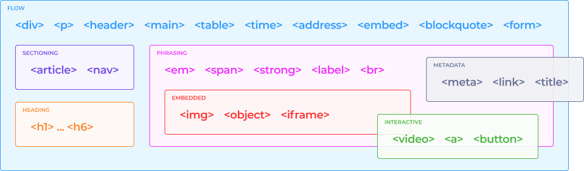

Глава 1.4. Работа со спецификацией
Что такое спецификация?
Спецификация языка HTML — это основной и самый важный документ как для разработчиков браузеров, так и разработчиков сайтов. Этот документ содержит в себе полное и подробное описание стандарта языка. Браузеры обрабатывают код по спецификации, разработчики пишут код по спецификации — и всё вместе хорошо работает. Это называется «веб-стандарты». Если у вас возник вопрос и вы не нашли на него ответ в тренажёрах или справочниках, то вы всегда можете открыть спецификацию и найти ответ там.
Версии спецификаций
Раньше было два варианта спецификации, с номерами, которую разрабатывали в W3C, и HTML Living Standard, который разрабатывали в WHATWG. Нужно было, во-первых, выбирать между ними, во-вторых — аргументация в спорных ситуациях становилась менее веской. На 2020 год поставщики спецификаций уже успели договориться, и «живой», актуальной и развивающейся спецификацией языка HTML будет HTML Living Standard(чтобы вместе всех собрать…). Таким образом, последняя выпущенная версия с номером — HTML 5.2. Та, последняя нумерованная версия, лежит по ссылке. На 2020 год расхождение минимально, но в дальнейшем наверняка это изменится.
Что важно знать про «живой стандарт»? Во-первых, что не нужно открывать с главной страницы одностраничную версию (One page), мы везде даём ссылки на мультистраничную подачу, так как она не перегружает браузер. Во-вторых, что теперь можно скачать спецификацию в.pdf, если трафика не жалко. Это бывает удобно, когда открыть сайт сложно, или когда хочется иметь её всегда как можно ближе.
Важные для верстальщиков разделы спецификации:- Semantics, structure, and APIs of HTML documents, в котором рассказывается о глобальных вещах, структуре документа, типах контента, глобальных атрибутах и так далее.
- The elements of HTML, в котором содержится информация о конкретных тегах.
Эти разделы описывают, как теги можно вкладывать друг в друга и что обозначает каждый тег.
Из всего многообразия метаданных нас интересуют четыре поля:
- Categories — здесь перечислены категории, или типы тегов, к которым этот тег относится.
- Contexts in which this element can be used — в каких областях на сайте может применяться тег.
- Content model — модель содержимого. Описывает, какое содержимое может быть внутри этого тега.
- Contents attributes — важное для нас поле. Оно говорит, какие атрибуты могут быть у этого тега.
Остальные поля метаданных нас интересуют меньше, а часть этих полей вообще вспомогательные, например:
- Tag Omission — показывает, когда тег можно не закрывать. Но профессиональный верстальщик теги закрывает, и мы будем поступать так же.
- Есть ещё поля, которые нужны в большей степени для JavaScript. На эти поля мы пока не будем обращать внимания.
Категории тегов
Чтобы понять, что это за поля и как они работают, поговорим о главных категориях тегов, которые сейчас есть в современной спецификации. Основных категорий семь. При изучении категории главное понять, что каждая из категорий обозначает и как эти категории соотносятся друг с другом. Заучивать, какие теги есть в каждой категории, конечно же, не нужно. Давайте взглянем на диаграмму категорий.

Существует два основных типа тегов: теги Flow — поточные, и теги, которые относятся к метаданным — Metadata.
Metadata — это всё, что может находиться в теге head — дополнительная информация, которая может влиять на всю страницу.
Flow — это всё то, что находится внутри body. То есть, всё, что мы можем своими глазами увидеть — содержимое страницы.
Metadata немного пересекается с Flow, потому что некоторые теги из Metadata мы можем вставлять внутрь body, в частности, теги style, script и так далее.
Внутри Flow выделяют подкатегории.
- Heading content — самая простая подкатегория, заголовочные теги: h1, h2, h3 и так далее.
- Sectioning content — теги, предназначенные для создания крупных смысловых разделов на странице: article, aside, nav, section.
- Phrasing content — фразовые теги, небольшие слова или словосочетания, что-то мелкое: a, em, i, span и так далее.
Есть теги, у которых одна категория, а есть теги, которые относятся сразу к нескольким категориям или ни к одной из них. Например, тег div не попадает ни в Heading, ни в Sectioning, ни в Phrasing content, а является просто Flow Content. С другой стороны, тег h1 относится одновременно и к Heading, и к Flow Content. И это достаточно логично, ведь Heading Content является подкатегорией Flow Content.
Переходим к следующей категории, Embedded content.
- Embedded content — встраиваемый контент, подмножество Phrasing
content. Это вещи, которые не являются частью языка HTML, но их надо отрисовать на
странице.
Самый простой пример — JPEG, самые обычные картинки, которые очень часто встречаются на страницах в интернете. Чтобы вставить картинку на страницу, нужен встраиваемый тег img. Ещё примеры: тег audio, чтобы вставлять аудиофайлы mp3, canvas — холст, на котором можно рисовать с помощью JavaScript.
- Interactive content — интерактивный контент, с которым можно как-то взаимодействовать. Например: ссылки (по ним можно щёлкать и переходить на другие страницы), видео (его можно запускать и останавливать, перематывать и менять громкость). Некоторые элементы могут быть в каких-то состояниях интерактивными, а в каких-то нет. Например, с обычным видео можно взаимодействовать, оно интерактивное, но если у видео убрать атрибут control, то у него исчезнут элементы управления, и этот элемент станет неинтерактивным. Подобные неинтерактивные видео часто используются в качестве фона. 
Вкладывание тегов
Чтобы определить, можно ли один тег вложить в другой, нужно проанализировать раздел Categories у вкладываемого тега и раздел Content model у тега, в который вкладываем.
Проверим, можно ли вложить p в ul?
- Для этого смотрим, какая модель содержания (поле Content model) у тега, в который вкладывается другой тег. В нашем случае у тега ul в Content model находится Zero or more li and script-supporting elements.
- Проверяем категории (поле Categories) у тега, который вкладываем в другой тег. В нашем случае у тега p категории Flow и Palpable.
- Если есть совпадения между моделью содержания родительского тега и категориями дочернего тега, то вкладывать можно. В нашем случае в ul можно вкладывать либо тег li, либо script-supporting elements, а тег p не является ни тем ни другим, значит, его вкладывать нельзя.
А теперь проверим, можно ли вложить p в li?
- В данном случае у тега li в Content model находится Flow content.
- Проверяем категории (поле Categories) у тега p — Flow и Palpable.
- В данном случае есть совпадения между моделью содержания родительского тега и категориями дочернего тега, а значит, p в li вкладывать можно.
А теперь задача посложнее, нужно проверить, можно ли вложить h1 в a?
Прозрачная модель контента — когда модель содержимого элемента совпадает с моделью содержимого родительского тега. В нашем случае необходимо дополнительно проанализировать поле Content model у родительского, по отношению к a, тега.
В случае, когда тег a вложен в p, нельзя вкладывать h1 в a:
Но если ссылка обёрнута в тег section, то такая вложенность разрешена:
Продолжить